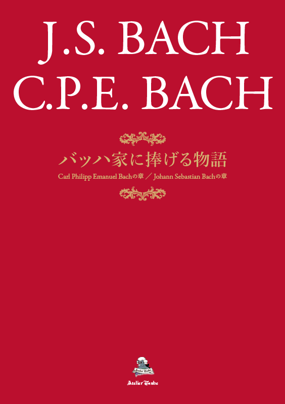
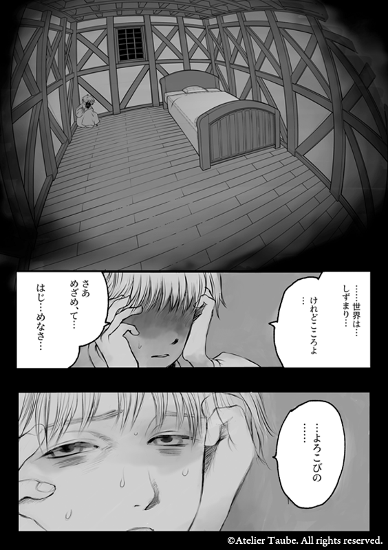

-


Printed Edition:
A5判・表紙込み全80ページ・オフセット印刷
A5 / 80 pp. incl. cover / offset print Price:
Printed Edition: JPY 5,800
Kindle Edition: JPY 3,800 Language: 日本語, Japanese Author: Taube Visual Support: Mokusei Published by: Atelier Taube Kindle版を見る 本書に関するご質問は、メールにてお問い合わせください。
For inquiries about this book, please contact us by email. Contact: > Privacy Policy May 27, 2026 バッハ家に捧げる物語 Carl Philipp Emanuel Bachの章 ／ Johann Sebastian Bachの章 J.S. バッハと C.P.E. バッハ父子を題材にした、漫画形式の視覚作品。
本書は、ヨハン・ゼバスティアン・バッハと、その息子カール・フィリップ・エマヌエル・バッハを描いた作品です。
史実や音楽史上の出来事を参考にしながらも、本作は一般的な伝記漫画や音楽解説漫画ではありません。 会話、心理描写、場面構成には作者の解釈と想像を含み、バッハ父子を一人の人間として見つめるフィクションとして構成されています。
バッハを、楽曲や音楽史上の偉人としてだけではなく、喪失や家族、信仰の中で音楽を書き続けた一人の人間として見つめる作品です。
偉大な作曲家として知られる J.S. バッハ。
そして、父の後の時代に、自らの音楽を切り開いた C.P.E. バッハ。
本書では、バッハ父子を単なる歴史上の人物としてではなく、家族、信仰、喪失、継承、そして音楽の中に生きた人間として描いています。
幼くして両親を失ったバッハは、なぜ音楽を続けたのか。
偉大な父を持った C.P.E. バッハは、その存在をどのように受け止め、自らの道を選んでいったのか。
本作は、そうした父子の姿を、史実の説明ではなく、物語として描こうとする試みです。
バッハの音楽、クラシック音楽、音楽史、そして作曲家の内面や家族の物語に関心のある方に向けた一冊です。
※本作は J.S. バッハおよび C.P.E. バッハの生涯を題材にしたフィクションです。史実・資料を参考にしていますが、会話や心理描写、場面構成には作者による解釈と想像が含まれます。 A Tale Dedicated to the House of Bach Carl Philipp Emanuel Bach Chapter / Johann Sebastian Bach Chapter A manga-form visual work based on J. S. Bach and his son C. P. E. Bach.
This work portrays Johann Sebastian Bach and his son, Carl Philipp Emanuel Bach.
While it draws on historical facts and events in music history, this is not a conventional biographical manga or a music guide. Its dialogue, psychological portrayals, and scene construction include the author’s interpretation and imagination, and the work is composed as a fictional portrayal of Bach and his son as human beings.
Rather than seeing Bach only as a composer of musical works or as a great figure in music history, this work looks at him as a human being who continued to write music within loss, family, faith, and life itself.
J. S. Bach is known as one of the greatest composers in music history.
C. P. E. Bach, living in the era after his father, opened his own path in music.
This book portrays Bach and his son not merely as historical figures, but as human beings who lived within family, faith, loss, legacy, and music.
Having lost his parents at an early age, why did Bach continue to devote himself to music?
How did C. P. E. Bach, the son of a great father, come to terms with that presence and choose his own path?
This work is an attempt to portray these father and son figures not through historical explanation, but through narrative.
It is a book for readers interested in Bach’s music, classical music, music history, and stories that explore the inner lives and families of composers.
* This work is a fictional work based on the lives of J. S. Bach and C. P. E. Bach. While it refers to historical facts and source materials, the dialogue, psychological portrayals, and scene construction include the author’s interpretation and imagination.